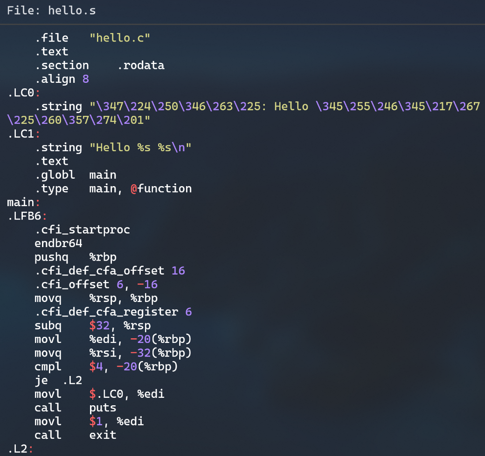
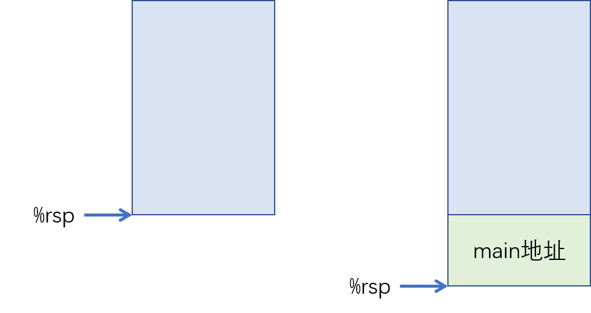

# 第3章 编译
# 编译的概念与作用
# 概念
编译是利用编译器（此实验为gcc）从源程序产生目标程序的过程。
# 作用
将便于人编写、阅读、维护的高级计算机语言所写作的源代码（此实验为预处理后的.i文件），翻译为低阶机器语言的过程（此处为汇编语言）。
# 在Ubuntu下编译的命令
使用gcc -S进行编译，生成汇编代码，如图
查看汇编代码的内容，示例如下

# Hello的编译结果解析
# hello.s概述
- .align 声明对指令或者数据的存放地址进行对齐的方式，本处为8
- .LC0 标签下有一个string类型
- .LC1 标签下是第二个string类型
- .globl 声明全局变量 main
- .type 用来指定是函数类型或是对象类型 本处main @function
# 数据类型
- int型整数
main函数中使用的int型变量有参数argc和循环变量i。
a) int argc：作为main函数第一个参数传入，这个值是后面参数argv指针数组的数组元素个数
b) int i：编译器将局部变量i存储在了栈空间中，本处编译器将 i 存储在栈上空间-4(%rbp)中， i 占据了栈中的 4B，对-4(%rbp)进行操作。
- string字符串
如图 10 hello.s开头可见，有两个字符串分别被标记为.LC0和.LC1，其中.LC0对应的是main中的"用法： Hello 学号 姓名 秒数！\n"，而.LC1对应的是"Hello %s %s\n"。 由于采用了UTF-8编码，一个汉字对应3个字节，所以在汇编代码中.LC0字符串对应关系如下：
| 汉字 | 编码 |
|---|---|
| 用 | \347\224\250 |
| 法 | \346\263\225 |
| 学 | \345\255\246 |
| 号 | \345\217\267 |
| 姓 | \345\247\223 |
| 名 | \345\220\215 |
| 秒 | \347\247\222 |
| 数 | \346\225\260 |
| ！（中文叹号） | \357\274\201 |
这两个字符串都是只读的，位于.rodata只读数据节中。
- 数组
main函数中的数组是char *argv[] ，指的是命令行参数。
argv 每个指针元素 char*大小 8B，argv 指针指向已经分配好的、一片存放着字符指针的连续空间，起始地址为 argv，main 函数中访问数组元素argv[1]，argv[2]时，按照起始地址 argv 大小 8B 计算数据地址取数据，在hello.s 中，引用两次(%rax)（两次 rax 为argv[1]和 argv[2]的地址）取出其值。
# 赋值操作
在汇编中，赋值操作一般使用mov指令。将变量i初始化为0的指令如下：
mov指令后会有表示数据大小的后缀，包括q、l、w、b，具体解释如下：
| 后缀 | 含义 |
|---|---|
| b | 1个字节（byte） |
| w | 2个字节（word） |
| l | 4个字节（long） |
| q | 8个字节（quadword） |
由于i是int类型的变量，是4字节的，所以指令使用了movl对i进行赋值。
# 类型转换
- 从int转换为float时，不会发生溢出，但由于int使用32位存储整数，而float中只有23位用于存储整数部分，所以转换后可能有数据被舍入。
- 从int或 float转换为double时，因为double的有效位数足够多，所以能保留精确值。
- 从double转换为float和int时，可能发生溢出，此外，由于有效位数变少，故可能被舍入。
- 从float 或double转换为int时，因为int没有小数部分，所以数据可能会向0方向被截断
当前代码中没有隐式的类型转换。
# 算术操作
常用算术操作如下表：
| 指令 | 解释 |
|---|---|
| INC reg/mem | reg/mem += 1 |
| DEC reg/mem | reg/mem += 1 |
| ADD src, dst | dst += src |
| SHL imm, reg/mem | reg/mem 逻辑左移imm位 |
| SHR imm, reg/mem | reg/mem 逻辑右移imm位 |
| SAR imm, reg/mem | reg/mem 算数右移imm位 |
程序中，对循环变量i增加1的指令如下图：
和mov指令相似，由于i是int型的4字节数据类型，所以add也要加后缀l。
# 比较操作
最常用的比较操作是组合使用cmp src1， src2指令和jXX tag指令。cmp指令首先计算src2 – src1，从而获得条件码，之后jXX指令根据条件码决定进行跳转到tag。 例如，hello.c中比较argc是否为4：
在汇编中，使用cmpl：
该指令的流程是：计算argc – 4，若结果是0，则满足je跳转条件（条件码为ZERO/EQUAL），则控制跳转到.L2位置；否则，控制流正常线性执行。
相似地，test src1， src2指令也可以用于跳转。
控制转移包括if、switch、while三大类。
if条件判断：此部分见3.3.6 比较操作。
switch分支：当前程序没有用到switch操作。
但是需要注意的是，switch的原理是根据跳转表进行跳转。
- while循环
程序中用到了for循环，与while循环类似。
三种常用循环转为汇编的结构如下：
do-while：
Loop：
Body
If(Test)
Goto Loop
While第一种实现：
Goto Test
Loop：
Body
If(Test)
Goto Loop
While第二种实现：
If(!Test)
Goto Done
Loop：
Body
If(Test)
Goto Loop
Done：
for：
Init
Goto Test
Loop：
Body
Update
If(Test)
Goto Loop
# 函数
程序中涉及函数操作的有：
- main 函数：
a) 调用
通过 call指令跳转到main。call 指令将下一条指令的地址压栈，然后跳转到 main 函数，如图：

b) 传递参数
分别使用%rdi （第一个参数）和%rsi （第二个参数）存储argc和argv。Main函数通过对两个寄存器进行操作，实现获取参数。
c) 返回
返回值储存在%eax中。设置%eax为0，也就是return 0。 注意到main最后两个指令ret和leave：
leave指令相当于mov %rbp， %rsp和pop %rbp。即用于回退栈帧，将两个与栈帧有关的寄存器回退到调用main之前的状态。 ret指令相当于pop %rip，即弹出跳转到栈顶元素所指示的地址进行执行。由于call时是将下一条指令的地址压栈，所以此时弹栈就可以回到之前的位置继续执行。
- printf 函数：
a) 传递参数：第一次 printf 将%rdi 设置为("用法： Hello 学号 姓名 秒数！\n")字符串的首地址。第二次 printf 设置%rdi 为“Hello %s %s\n”的首地址，设置%rsi 为 argv[1]，%rdx 为 argv[2]。
b) 执行：注意printf是一种IO操作，在其内部会使用系统调用syscall。详细说明见第6章 hello进程管理。
atoi函数，sleep 函数，getchar 函数，exit 函数与上述函数类似，不再重复说明。需要注意exit同样也使用了系统调用_exit。
# 本章小结
本章通过对于hello.i进行编译，获得汇编文件hello.s，结合编译的概念及作用分析了编译对文本.i文件的相应处理，详细地阐述了数据、赋值、类型转换、算术操作、逻辑/位操作、关系操作、数组/指针/结构操作、控制转移、函数操作的过程，并对结果进行了相应的解析。